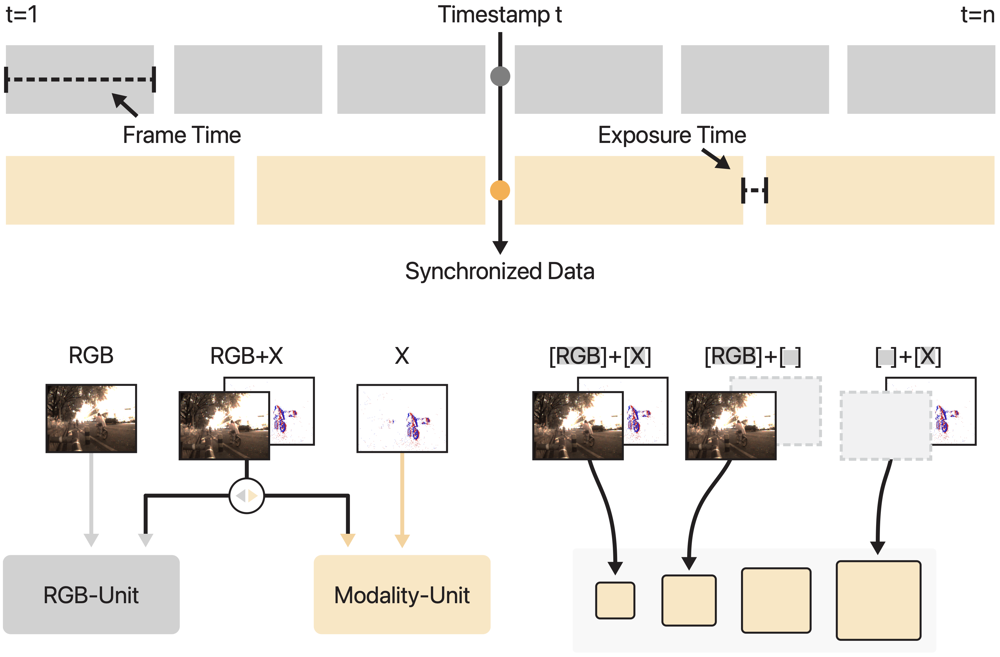
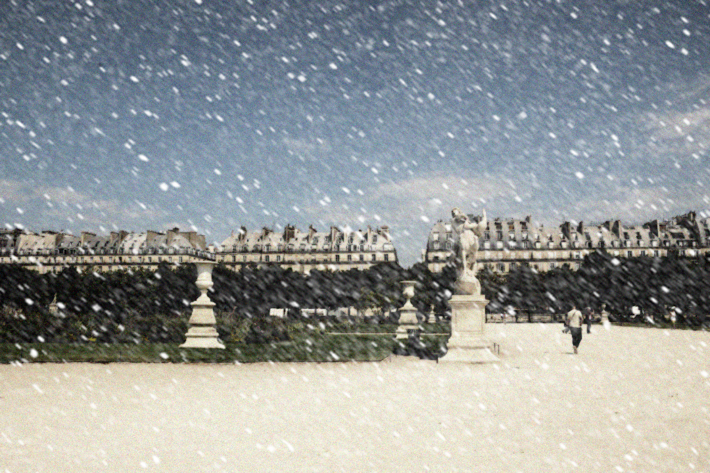
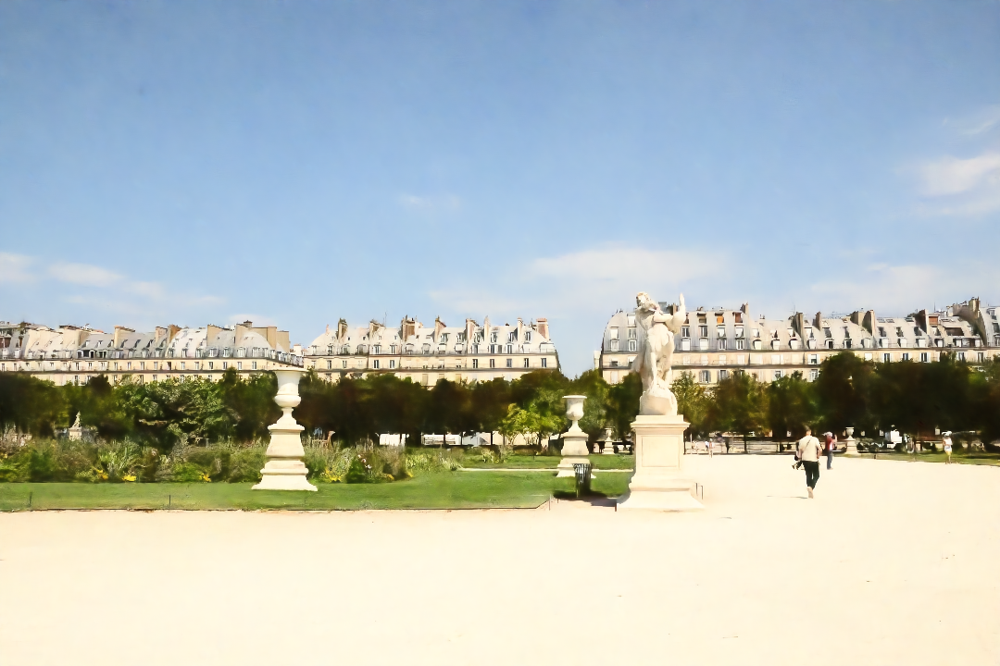
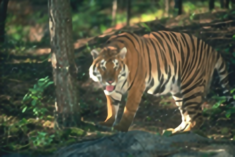
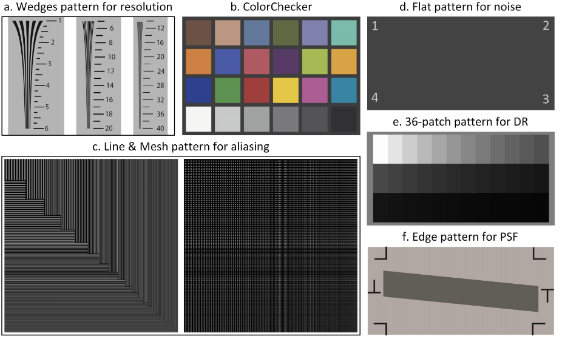
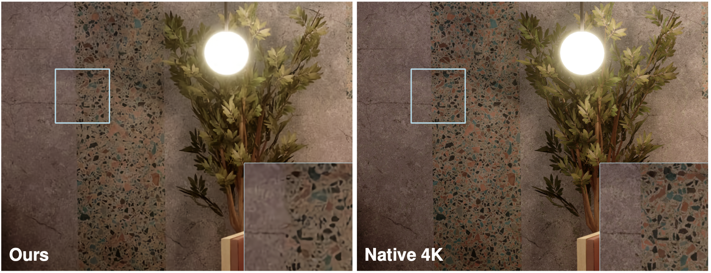

Eduard Zamfir
I am a PhD student in Computer Science at the University of Würzburg, advised by Radu Timofte and affiliated with the ELLIS Unit Franconia. I am fortunate to closely collaborate with Yulun Zhang, Danda Pani Paudel, and Luc van Gool.
I received my M.Sc. in Computational Engineering from TU Darmstadt, where I was a research assistant in the Visual Inference Lab under Stefan Roth, and my B.Sc. in Mechanical Engineering with a focus on mechatronics and automotive engineering, also from TU Darmstadt.
News
|
ResearchMy research centers on efficient and adaptive learning, addressing problems from low-level vision to generative synthesis. |
|
Elastic Token Compression for Pixel-Space Diffusion Transformers
Eduard Zamfir, Christian Reisswig, Zongwei Wu, Yongqin Xian, Radu Timofte Preprint 2026 Project Page |
|

|
Language-Free Generative Editing from One Visual Example
Omar Elezabi, Eduard Zamfir, Zongwei Wu, Radu Timofte CVPR 2026 Paper / Project Page |
|
 |
What You Have is What You Track: Adaptive and Robust Multimodal Tracking
Yuedong Tan, Jiawei Shao, Eduard Zamfir, Ruanjun Li, Zhaochong An, Chao Ma, Danda Pani Paudel, Luc van Gool, Radu Timofte, Zongwei Wu ICCV 2025 Paper / Code |
|
XTrack: Multimodal Training Boosts RGB-X Video Object Trackers
Yuedong Tan, Zongwei Wu, Zhuyun Zhou, Yuqian Fu, Guolei Sun, Eduard Zamfir, Chao Ma, Danda Pani Paudel, Luc van Gool, Radu Timofte ICCV 2025 Paper / Code |
|
|
  |
Complexity Experts are Task-Discriminative Learners for Any Image Restoration
Eduard Zamfir, Zongwei Wu, Nancy Mehta, Yuedong Tan, Danda Pani Paudel, Yulun Zhang, Radu Timofte CVPR 2025 Paper / Code / Project Page |
|
|
ReCap: Better Gaussian Relighting with Cross-Environment Captures
Jingzhi Li, Zongwei Wu, Eduard Zamfir, Radu Timofte CVPR 2025 Paper / Project Page |
|
 |
See More Details: Efficient Image Super-Resolution by Experts Mining
Eduard Zamfir, Zongwei Wu, Nancy Mehta, Yulun Zhang, Radu Timofte ICML 2024 Paper / Code / Project Page |
|
 |
SQAD: Automatic Smartphone Camera Quality Assessment and Benchmarking
Zilin Fang, Andrey Ignatov, Eduard Zamfir, Radu Timofte ICCV 2023 Paper / Code |
|
 |
Towards Real-Time 4K Image Super-Resolution
Eduard Zamfir, Marcos V. Conde, Radu Timofte CVPRW 2023 Paper / Code |

|
Semantic Self-adaptation: Enhancing Generalization with a Single Sample
Sherwin Bahmani*, Oliver Hahn*, Eduard Zamfir*, Nikita Araslanov, Daniel Cremers, Stefan Roth TMLR 2023 Paper / Code |

{kind=link}
Academic Service
|
|
Website source code by Jon Barron. |